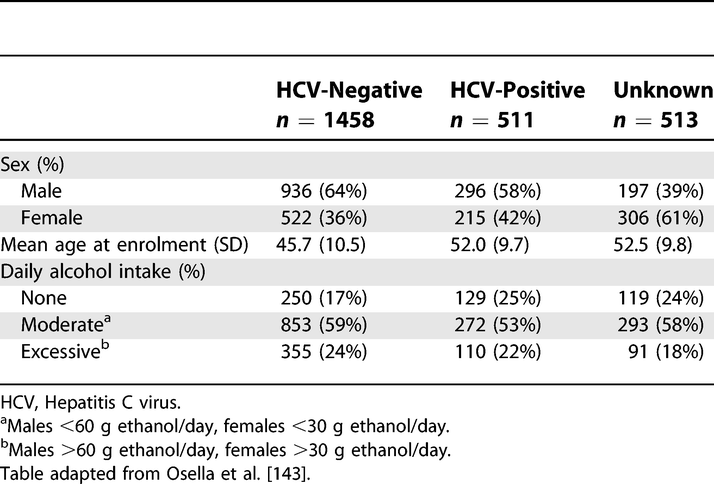
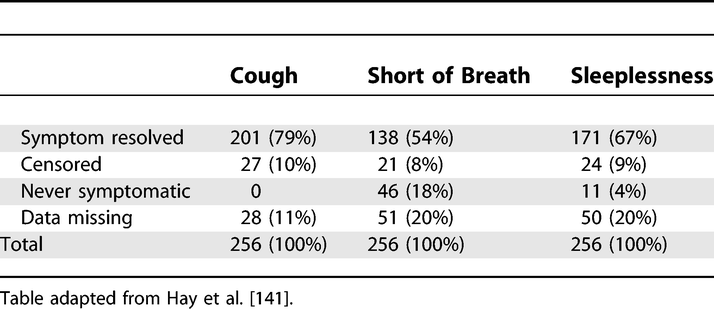

Results: Descriptive Data (14)
The items from STROBE state that you should report:
- Give characteristics of study participants (e.g., demographic, clinical, social) and information on exposures and potential confounders
- Indicate the number of participants with missing data for each variable of interest - Cohort study Summarize follow-up time (e.g., average and total amount)
Some key items to consider adding:
- Give the distribution of the biomarker measurement (including mean, median, range and variance)
- Average treatment duration for all groups
- Any subjects that changed exposure status
- Numbers eligible for follow-up, numbers with completed follow-up and numbers remaining on treatment and/or in analysis at relevant time points during follow-up (eg, at yearly intervals).
- Summarize follow-up time (e.g, average and total amount), if appropriate to the study design
- The use of tabular or graphical presentations of numbers exposed, outcomes and relative risks over time is encouraged
- Unweighted sample size and percentages
- Estimated population proportions or means with estimated precision (e.g., 95% confidence interval)
Explanation 14a
Readers need descriptions of study participants and their exposures to judge the generalizability of the findings. Information about potential confounders, including whether and how they were measured, influences judgments about study validity. We advise authors to summarize continuous variables for each study group by giving the mean and standard deviation, or when the data have an asymmetrical distribution, as is often the case, the median and percentile range (eg, 25th and 75th percentiles). Variables that make up a small number of ordered categories (such as stages of disease I to IV) should not be presented as continuous variables; it is preferable to give numbers and proportions for each category (see also box 4). In studies that compare groups, the descriptive characteristics and numbers should be given by group, as in the example above.
Inferential measures such as standard errors and confidence intervals should not be used to describe the variability of characteristics, and significance tests should be avoided in descriptive tables. Also, P values are not an appropriate criterion for selecting which confounders to adjust for in analysis; even small differences in a confounder that has a strong effect on the outcome can be important.144,145
In cohort studies, it may be useful to document how an exposure relates to other characteristics and potential confounders. Authors could present this information in a table with columns for participants in two or more exposure categories, which permits to judge the differences in confounders between these categories.
In case-control studies potential confounders cannot be judged by comparing cases and controls. Control persons represent the source population and will usually be different from the cases in many respects. For example, in a study of oral contraceptives and myocardial infarction, a sample of young women with infarction more often had risk factors for that disease, such as high serum cholesterol, smoking and a positive family history, than the control group.146 This does not influence the assessment of the effect of oral contraceptives, as long as the prescription of oral contraceptives was not guided by the presence of these risk factors - eg, because the risk factors were only established after the event (see also box 5). In case-control studies the equivalent of comparing exposed and non-exposed for the presence of potential confounders (as is done in cohorts) can be achieved by exploring the source population of the cases: if the control group is large enough and represents the source population, exposed and unexposed controls can be compared for potential confounders.121,147
Example 14a
Table.  Characteristics of the Study Base at Enrolment, Castellana G (Italy), 1985–1986
Explanation 14b
As missing data may bias or affect generalizability of results, authors should tell readers amounts of missing data for exposures, potential confounders, and other important characteristics of patients (see also item 12c and box 6). In a cohort study, authors should report the extent of loss to follow-up (with reasons), since incomplete follow-up may bias findings (see also items 12d and 13).148 We advise authors to use their tables and figures to enumerate amounts of missing data.
Example 14b
Table.  Symptom End Points Used in Survival Analysis https://doi.org/10.1371/journal.pmed.0040297.t003
Explanation 14c
Readers need to know the duration and extent of follow- up for the available outcome data. Authors can present a summary of the average follow-up with either the mean or median follow-up time or both. The mean allows a reader to calculate the total number of person-years by multiplying it with the number of study participants. Authors also may present minimum and maximum times or percentiles of the distribution to show readers the spread of follow-up times. They may report total person-years of follow-up or some indication of the proportion of potential data that was captured. 148 All such information may be presented separately for participants in two or more exposure categories. Almost half of 132 articles in cancer journals (mostly cohort studies) did not give any summary of length of follow-up.(Altman et al., 1995; Vandenbroucke et al., 2007)
Example 14c
“During the 4366 person-years of follow-up (median 5.4, maximum 8.3 years), 265 subjects were diagnosed as having dementia, including 202 with Alzheimer’s disease” [149].
## Field-specific guidance
Anti-microbial stewardship programs (Tacconelli et al., 2016)
- Specify among the exposure: previous stay in long-term care facilities, nursing home and other healthcare settings
Genetic association studies (Little et al., 2009)
- Consider giving information by genotype
Infectious disease molecular epidemiology (Field et al., 2014)
- Give information by strain type if appropriate, with use of standardised nomenclature
Neonatal infections (Fitchett et al., 2016)
- Describe maternal infections (clinical or on screening—eg, group B streptococcus or HIV) or risk factors for infection (eg, premature rupture of membranes, peripartum fever)
- Describe key neonatal characteristics, including sex, postnatal and gestational age categories (range and median), birthweight categories (range and median), birth place, feeding (breastmilk or other), and comorbidities
- Report data on occurrence of individual signs, according to case definitions
- Give proportion of mothers and neonates with peripartum antibiotic exposure (with or without pre-admission exposusure for neonates). Report details of antimicrobial drugs (or supportive care) given during the study
Nutritional data (Lachat et al., 2016)
- Give the distribution of participant characteristics across the exposure variables if applicable. Specify if food consumption of total population or consumers only were used to obtain results
Simulation-based research (Cheng et al., 2016)
- In describing characteristics of study participants, include their previous experience with simulation and other relevant features as related to the intervention(s)
Veterinary epidemiology (O’Connor et al., 2016)
- Give characteristics of study participants (e.g, demographic, clinical, social) and information on exposures and potential confounders by group and level of organization, if applicable
- Indicate number of participants with missing data for each variable of interest and at all relevant levels of organization
## Resources
Do you know of any good guidance or resources related to this item? Suggest them via comments below, Twitter, GitHub, or e-mail.
References
Altman, D. G., Stavola, B. D., Love, S. B., & Stepniewska, K. A. (1995). Review of survival analyses published in cancer journals. British Journal of Cancer, 72(2), 511–518. https://doi.org/10.1038/bjc.1995.364
Cheng, A., Kessler, D., Mackinnon, R., Chang, T. P., Nadkarni, V. M., Hunt, E. A., Duval-Arnould, J., Lin, Y., Cook, D. A., Pusic, M., Hui, J., Moher, D., Egger, M., & Auerbach, M. (2016). Reporting guidelines for health care simulation research: Extensions to the CONSORT and STROBE statements. Advances in Simulation, 1, 25. https://doi.org/10.1186/s41077-016-0025-y
Field, N., Cohen, T., Struelens, M. J., Palm, D., Cookson, B., Glynn, J. R., Gallo, V., Ramsay, M., Sonnenberg, P., MacCannell, D., Charlett, A., Egger, M., Green, J., Vineis, P., & Abubakar, I. (2014). Strengthening the Reporting of Molecular Epidemiology for Infectious Diseases (STROME-ID): An extension of the STROBE statement. The Lancet Infectious Diseases, 14(4), 341–352. https://doi.org/10.1016/S1473-3099(13)70324-4
Fitchett, E. J. A., Seale, A. C., Vergnano, S., Sharland, M., Heath, P. T., Saha, S. K., Agarwal, R., Ayede, A. I., Bhutta, Z. A., Black, R., Bojang, K., Campbell, H., Cousens, S., Darmstadt, G. L., Madhi, S. A., Meulen, A. S.-t., Modi, N., Patterson, J., Qazi, S., … Lawn, J. E. (2016). Strengthening the Reporting of Observational Studies in Epidemiology for Newborn Infection (STROBE-NI): An extension of the STROBE statement for neonatal infection research. The Lancet Infectious Diseases, 16(10), e202–e213. https://doi.org/10.1016/S1473-3099(16)30082-2
Lachat, C., Hawwash, D., Ocké, M. C., Berg, C., Forsum, E., Hörnell, A., Larsson, C., Sonestedt, E., Wirfält, E., Åkesson, A., Kolsteren, P., Byrnes, G., De Keyzer, W., Van Camp, J., Cade, J. E., Slimani, N., Cevallos, M., Egger, M., & Huybrechts, I. (2016). Strengthening the Reporting of Observational Studies in Epidemiology—Nutritional Epidemiology (STROBE-nut): An Extension of the STROBE Statement. PLOS Medicine, 13(6), e1002036. https://doi.org/10.1371/journal.pmed.1002036
Little, J., Higgins, J. P. T., Ioannidis, J. P. A., Moher, D., Gagnon, F., Elm, E. von, Khoury, M. J., Cohen, B., Davey-Smith, G., Grimshaw, J., Scheet, P., Gwinn, M., Williamson, R. E., Zou, G. Y., Hutchings, K., Johnson, C. Y., Tait, V., Wiens, M., Golding, J., … Birkett, N. (2009). STrengthening the REporting of Genetic Association Studies (STREGA)— An Extension of the STROBE Statement. PLOS Med, 6(2), e1000022. https://doi.org/10.1371/journal.pmed.1000022
O’Connor, A. M., Sargeant, J. M., Dohoo, I. R., Erb, H. N., Cevallos, M., Egger, M., Ersbøll, A. K., Martin, S. W., Nielsen, L. R., Pearl, D. L., Pfeiffer, D. U., Sanchez, J., Torrence, M. E., Vigre, H., Waldner, C., & Ward, M. P. (2016). Explanation and Elaboration Document for the STROBE-Vet Statement: Strengthening the Reporting of Observational Studies in Epidemiology – Veterinary Extension. Zoonoses and Public Health, 63(8), 662–698. https://doi.org/10.1111/zph.12315
Tacconelli, E., Cataldo, M. A., Paul, M., Leibovici, L., Kluytmans, J., Schröder, W., Foschi, F., Angelis, G. D., Waure, C. D., Cadeddu, C., Mutters, N. T., Gastmeier, P., & Cookson, B. (2016). STROBE-AMS: Recommendations to optimise reporting of epidemiological studies on antimicrobial resistance and informing improvement in antimicrobial stewardship. BMJ Open, 6(2), e010134. https://doi.org/10.1136/bmjopen-2015-010134
Vandenbroucke, J. P., Elm, E. von, Altman, D. G., Gotzsche, P. C., Mulrow, C. D., Pocock, S. J., Poole, C., Schlesselman, J. J., & Egger, M. (2007). Strengthening the Reporting of Observational Studies in Epidemiology (STROBE): Explanation and Elaboration. Epidemiology, 18(6), 805–835. https://doi.org/10.1097/EDE.0b013e3181577511